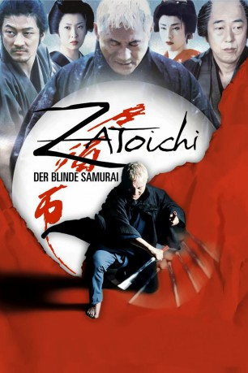
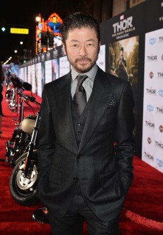

#84 Zatoichi - Der blinde Samurai
Alternativ: The Blind Swordsman: Zatoichi (Englischer Titel)
 
 IMDB-Wertung: 7.6 / 10
IMDB-Wertung: 7.6 / 10  Metascore: 75
Metascore: 75 
Japan im 19. Jahrhundert. Zatoichi ist ein blinder Wanderer, der sich seinen Lebensunterhalt mit Glücksspiel und Massagen verdient. Doch hinter der bescheidenen Fassade versteckt sich ein meisterhafter Schwertkämpfer, der blitzschnell und mit unfassbarer Präzision zuschlägt. Zatoichi lässt sich in einem kleinen Bergdorf nieder, in dem die Ginzo-Gang mit unerbittlicher Härte regiert. Kompromisslos beseitigen die Ginzo-Männer jeden, der sich ihnen in den Weg stellt. Bald schon eskaliert die Lage und Zatoichi sieht sich gezwungen einzuschreiten. Und wo er die Klinge seines, in einem Gehstock verborgenen, Samuraischwerts aufblitzen lässt, werden keine Gefangenen gemacht. Schlechte Zeiten brechen an für die Ginzo-Gang.
Jahr: 2003
Dauer: 116 Minuten
FSK: 16
Land: Japan Studio: Concorde FilmverleihTonspuren:
Untertitel:
Auflösung: 1080p (1920×1040) Größe: 11161 MB
Genre: Action, Komödie, Krimi, Drama, Thriller
Regisseur:  Takeshi Kitano
Takeshi Kitano
Drehbuch: Takeshi Kitano, Kan Shimozawa
Soundtrack: Keiichi Suzuki
Darsteller:
 Takeshi Kitano als Zatôichi / Ichi
Takeshi Kitano als Zatôichi / Ichi-  Tadanobu Asano als Hattori Genosuke
- Yûko Daike als Geisha Okinu Naruto
- Michiyo Ohkusu als Aunt Oume
- Taka Guadalcanal als Shinkichi
- Daigorô Tachibana als Geisha Seitaro 'Osei' Naruto
- Yui Natsukawa als O-Shino, Hattori's Wife
- Ittoku Kishibe als Boss Inosuke Ginzo
- Saburô Ishikura als Boss Tashichi Ogi
- Akira Emoto als Tavern Owner Pops
- Ben Hiura als Tavern Gramps
- Kohji Miura als Lord Sakai
- Hideboh als Dancing Farmer
- Ron II als Dancing Farmer
- Suji als Dancing Farmer
- Noriyasu als Dancing Farmer
- Makoto Ashikawa als Carpenter
- Tsumami Edamame als Carpenter
- Kosuke Ohta als Carpenter
- Yoshiyuki Morishita als Carpenter
- Naomasa Musaka als Yakuza Boss on the Country Road
- Shôken Kunimoto als Rival Swordsman
- Daigaku Sekine als Ginzo's Henchman I
- Koji Koike als Boss Funahachi
- Kôji Kiryû als Dice Dealer at Funahachi's Joint
- Taigi Kobayashi als Funahachi's Bodyguard
- Ayano Yoshida als Young O-Kinu
- Taichi Saotome als Young O-Sei, Seitaro
- Kanji Tsuda als Playboy at Home
- Ikki Goto als Kuchinawa Underling 1
- Yoshio Nakamura als Kuchinawa Underling 3
- Hiroaki Noguchi als Kuchinawa Underling 5
- Shinichi Nakatsu als Kuchinawa Underling 2
- Toru Yonezu als Kuchinawa Underling 4
- P. Man als Tavern Customer 4
- Al Kitago als Farmer Boy 1
- Omiya no Matsu als Farmer Boy 2
- Tsutomu Takeshige als Farmer Boy 4
- Gambino Kobayashi als Farmer Boy 5
- Sammy Moremore Jr. als Farmer Boy 6
- Muhômatsu als Farmer Boy with a Spear
- Ryûki Kitaoka als
- Isao Ogura als
- Masayoshi Ohzeki als
- Kenji Takechi als Yakuza
- Yôji Tanaka als
Datei: X:\HD-Eastern-Classic(N-Z)\Zatoichi - Der blinde Samurai (2003, FSK16, 1920x1040).mkv seit 02.02.2015
Festplatte: HD Eastern+Western
 Es gibt insgesamt 61 Filme in der Gruppe 'HD-Eastern-Classic(N-Z)'
Es gibt insgesamt 61 Filme in der Gruppe 'HD-Eastern-Classic(N-Z)'